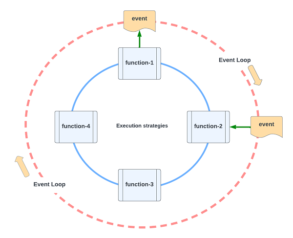

Welcome to the Mercury project
The Mercury project is created with one primary objective -
to make software easy to write, read, test, deploy, scale and manage.
Mercury has been powering mission-critical cloud native production applications for the last few years. In version 3, Mercury has evolved to the next level. It is bringing event-driven design and the best of preemptive and cooperative multitasking as a foundation to build "composable applications."
You have low-level control to precisely tune your application for optimal performance and throughput using three function execution strategies:
- kernel thread pool
- coroutine
- suspend function
Mercury version 3 achieves virtual threading using coroutine and suspend function.
In version 4, it fully embraces Java 21 virtual thread feature that was officially available since 12/2023.
August, 2024
Mercury version 3
Mercury version 3 is a software development toolkit for event-driven programming.
Event-driven programming allows functional modules to communicate with each other using events instead of direct method calls. This allows the functions to be executed asynchronously, improving overall application performance.
IMPORTANT: You should use Mercury version 4 unless you need backward compatibility for your production systems.
Please visit Mercury Version 4 using the links below:
Mercury v4: https://github.com/Accenture/mercury-composable
Documentation: https://accenture.github.io/mercury-composable/
Differences between Mercury version 3 and 4
The key differences of Mercury version 3 and the latest Mercury-Composable version 4 are:
| Category | Mercury 3.0 | Mercury 4.x |
|---|---|---|
| Java version | Supports Java 1.8 or higher | Requires Java 21 or higher |
| Event management | Orchestration by code | Event choreography by configuration |
| Multitasking | Coroutine and kernel | Java 21 virtual threads, coroutine and kernel |
| Functional isolation | KernelThreadRunner | Virtual Threads and KernelThreadRunner |
Breaking changes
By default, the system runs all functions as "coroutines" where previous versions run them using a kernel thread pool.
The CoroutineRunner annotation has been removed and replaced with the new KernelThreadRunner annotation.
The "rest.automation.yaml" key is renamed as "yaml.rest.automation" after we unify the parsing behavior of application.properties with application.yml.
Write your first composable application
To get started with your first application, please refer to the Chapter 4, Developer Guide.
Introduction to composable architecture
In cloud migration and IT modernization, we evaluate application portfolio and recommend different disposition strategies based on the 7R migration methodology.
7R: Retire, retain, re-host, re-platform, replace, re-architect and re-imagine.
The most common observation during IT modernization discovery is that there are many complex monolithic applications that are hard to modernize quickly.
IT modernization is like moving into a new home. It would be the opportunity to clean up and to improve for business agility and strategic competitiveness.
Composable architecture is gaining visibility recently because it accelerates organization transformation towards a cloud native future. We will discuss how we may reduce modernization risks with this approach.
Composability
Composability applies to both platform and application levels.
We can trace the root of composability to Service Oriented Architecture (SOA) in 2000 or a technical bulletin on "Flow-Based Programming" by IBM in 1971. This is the idea that architecture and applications are built using modular building blocks and each block is self-contained with predictable behavior.
At the platform level, composable architecture refers to loosely coupled platform services, utilities, and business applications. With modular design, you can assemble platform components and applications to create new use cases or to adjust for ever-changing business environment and requirements. Domain driven design (DDD), Command Query Responsibility Segregation (CQRS) and Microservices patterns are the popular tools that architects use to build composable architecture. You may deploy application in container, serverless or other means.
At the application level, a composable application means that an application is assembled from modular software components or functions that are self-contained and pluggable. You can mix-n-match functions to form new applications. You can retire outdated functions without adverse side effect to a production system. Multiple versions of a function can exist, and you can decide how to route user requests to different versions of a function. Applications would be easier to design, develop, maintain, deploy, and scale.
Composable architecture and applications contribute to business agility.
Building a composable application
Microservices
Since 2014, microservices architectural pattern helps to decompose a big application into smaller pieces of “self-contained” services. We also apply digital decoupling techniques to services and domains. Smaller is better. However, we are writing code in the same old fashion. One method is calling other methods directly. Functional and reactive programming techniques are means to run code in a non-blocking manner, for example Reactive Streams, Akka, Vertx, Quarkus Multi/Uni and Spring Reactive Flux/Mono. These are excellent tools, but they do not reduce the complexity of business applications.
Composable application
To make an application composable, the software components within a single application should be loosely coupled where each component has zero or minimal dependencies.
Unlike traditional programming approach, composable application is built from the top down. First, we describe a business transaction as an event flow. Second, from the event flow, we identify individual functions for business logic. Third, we write user story for each function and write code in a self-contained manner. Finally, we write orchestration code to coordinate event flow among the functions, so they work together as a single application.
The individual functions become the building block for a composable application. We can mix-n-match different sets of functions to address different business use cases.
Event is the communication conduit
Cloud native applications are deployed as containers or serverless functions. Ideally, they communicate using events. For example, the CQRS design pattern is well accepted for building high performance cloud native applications.
Figure 1 - Cloud native applications use event streams to communicate

However, within a single application unit, the application is mostly built in a traditional way. i.e. one function is calling other functions and libraries directly, thus making the modules and libraries tightly coupled. As a result, microservices may become smaller monolithic applications.
To overcome this limitation, we can employ “event-driven design” to make the microservices application unit composable.
An application unit is a collection of functions in memory and an “event bus” is the communication conduit to connect the functions together to form a single executable.
Figure 2 – Functions use in-memory event bus to communicate
In-memory event bus
For a composable application, each function is written using the first principle of “input-process-output” where input and output payloads are delivered as events. All input and output are immutable to reduce unintended bugs and side effects.
Since input and output for each function is well-defined, test-driven development (TDD) can be done naturally. It is also easier to define a user story for each function and the developer does not need to study and integrate multiple levels of dependencies, resulting in higher quality code.
Figure 3 - The first principle of a function
What is a “function”? For example, reading a record from a database and performing some data transformation, doing a calculation with a formula, etc.
Figure 4 - Connecting output of one function to input of another
As shown in Figure 4, if function-1 wants to send a request to function-2, we can write “event orchestration code” to put the output from function-1 into an event envelope and send it over an in-memory event bus. The event system will transport the event envelope to function-2, extract the payload and submit it as “input” to function-2
Function execution strategy
In event-driven application design, a function is executed when an event arrives as “input.” When a function finishes processing, your application can command the event system to route the result set (“output”) as an event to another function.
Figure 5 - Executing function through event flow

As shown in Figure 5, functions can send/receive events using an in-memory event bus (aka "event loop").
This event-driven architecture provides the foundation to design and implement composable applications. Each function is self-contained and loosely coupled by event flow.
A function receiving an event needs to be executed. There are three ways to do that:
- Kernel thread pool
- Coroutine
- Suspend function
Kernel thread pool
Java supports “preemptive multitasking” using kernel threads. Multiple functions can execute in parallel. Preemptive multitasking leverages the multiple cores of a CPU to yield higher performance.
Preemptive multitasking is performed at the kernel level and the operating system is doing the context switching. As a result, the maximum number of kernel threads is small. As a rule of thumb, a moderately fast computer can support ~200 kernel threads.
Figure 6 - Multitasking of kernel threads at the hardware and OS level
Coroutine
Many modern programming languages such as GoLang, Kotlin, Python and Node.js support “cooperative multitasking” using “event loop” or “coroutine.” Instead of context switching at the kernel level, functions are executed orderly by yielding to each other. The order of execution depends on the event flow of each business transaction.
Since the functions are running cooperatively, the overheads of context switching are low. “Event loop” or “Coroutine” technology usually can support tens of thousands of “functions” running in “parallel.” Technically, the functions are running sequentially. When each function finishes execution very quickly, they appear as running concurrently.
Figure 7 - Cooperative multitasking of coroutines
Java 1.8 and higher versions support event loop with open sources libraries such as Lightbend Akka and Eclipse Vertx. A preview “virtual thread” technology is available in Java version 19. It brings cooperative multitasking by running tens of thousands of “virtual threads” in a single kernel thread. This is a major technological breakthrough to close the gap with other modern programming languages.
“Suspend function”
In a typical enterprise application, many functions are waiting for responses most of the time. In preemptive multitasking, these functions are using kernel threads and consuming CPU time. Too many active kernel threads would turn the application into slow motion.
“Suspend function” not only avoids overwhelming the CPU with excessive kernel threads but also leverages the synchronous request-response opportunity into high throughput non-blocking operation.
As the name indicates, “suspend function” can be suspended and resumed. When it is suspended, it yields control to the event loop so that other coroutines or suspend functions can run.
In Node.js and GoLang, coroutine and suspend function are the same. Suspend function refers to the “async/await” keywords or API of coroutine. In Kotlin, the suspend function extends a coroutine to have the suspend/resume ability.
A function is suspended when it is waiting for a response from the network, a database or from another function. It is resumed when a response is received.
Figure 8 - Improving throughput with suspend function
As shown in Figure 8, a “suspend function” can suspend and resume multiple times during its execution. When it suspends, it is not using any CPU time, thus the application has more time to serve other functions. This mechanism is so efficient that it can significantly increase the throughput of the application. i.e. it can handle many concurrent users, and process more requests.
Performance and throughput
The ability to select an optimal function execution strategy for a function is critical to the success of a composable application. This allows the developer to have low level control of how the application performs and scales.
Without an optimal function execution strategy, performance tuning is usually an educated guess.
In composable application architecture, each function is self-contained and stateless. We can predict the performance of each function by selecting an optimal function execution strategy and evaluate it with unit tests and observability. Predicting application performance and throughput at design and development time reduces modernization risks.
The pros and cons of each function execution strategy are summarized below:
| Strategy | Advantage | Disadvantage |
|---|---|---|
| Kernel threads | Highest performance in terms of operations per seconds |
Lower number of concurrent threads due to high context switching overheads |
| Coroutine | Highest throughput in terms of concurrent users served by virtual threads concurrently |
Not suitable for long running tasks |
| Suspend function | Sequential "non-blocking" for RPC (request-response) that makes code easier to read and maintain |
Not suitable for long running tasks |
As shown in the table above, performance and throughput are determined by function execution strategies.
For example, single threaded event driven network proxies such as nginx support twenty times more concurrent connections than multithreaded application servers.
On the other hand, Node.js is not suitable for long running tasks. When one function takes more time to execute, all other functions are blocked and thus degrading the overall application performance. The latest Node.js language adds kernel threads using the “web worker” technology to alleviate this limitation. However, web worker API is more tedious than multithreading in Java and other programming languages.
The best of both worlds
If we simplify event-driven programming and support all three function execution strategies, we can design and implement composable applications that deliver high performance and high throughput.
The “virtual thread” feature in the upcoming Java version 19 will be a good building block for function execution strategies. Currently it is available as a “preview” feature.
When it becomes available later in 2023, it will have a significant impact on the Java community. It will be at par with other programming languages that support event loop. It supports non-blocking sequential programming without explicitly using the “async” and “await” keywords. All current open sources libraries that provide event loop functionality would evolve.
To accelerate this evolution, we have implemented Mercury version 3.0 as an accelerator to build composable applications. It supports the two pillars of composable application – In-memory event bus and selection of function execution strategies.
It integrates with Eclipse Vertx to hide the complexity of event-driven programming and embraces the three function execution strategies using kernel thread pool, coroutine and suspend function. The default execution strategy is "coroutine" unless you specify the function using the "KernelThreadRunner" annotation. To simplify writing “suspend function,” you can implement the “KotlinLambdaFunction” class and copy-n-paste your existing Java code into the new Kotlin class, the IDE will automatically convert code for you. With 90% conversion efficiency, you may need minor touch up to finish the rest.
We can construct a composable application with self-contained functions that execute when events arrive. There is a simple event API that we call the “Post Office” to support sequential non-blocking RPC, async, drop and forget, callback, workflow, pipeline, streaming and interceptor patterns.
Sequential non-blocking RPC reduces the effort in application modernization because we can directly port sequential legacy code from a monolithic application to the new composable cloud native design.
What is "event orchestration"?
In traditional programming, we write code to make calls to different methods and libraries. In event-driven programming, we write code to send events, and this is “event orchestration.” We can use events to make RPC call just like traditional programming. It is viable to port legacy orchestration logic into event orchestration code.
To further reduce coding effort, we can use Event Script to do “event orchestration.” This would replace code with simple event flow configuration.
To use event script, please upgrade to Mercury v4.
Mercury v4: https://github.com/Accenture/mercury-composable
Documentation: https://accenture.github.io/mercury-composable/
How steep is the learning curve for a developer?
The developer can use any coding style to write the individual functions, no matter it is sequential, object-oriented, or reactive. One may use any favorite frameworks or libraries. There are no restrictions.
There is a learning curve in writing “event orchestration.” Since event orchestration supports sequential non-blocking RPC, the developer can port existing legacy code to the modern style with direct mapping. Typically, the learning curve is about two weeks. If you are familiar with event-driven programming, the learning curve would be lower. To eliminate this learning curve, the developer may use Event Script that replaces orchestration code with event flow configuration files. Event Script is designed to have virtually zero API integration for exceptionally low learning curve.
Conclusion
Composability applies to both platform and application levels. We can design and implement better cloud native applications that are composable using event-driven design and the three function execution strategies.
We can deliver application that demonstrates both high performance and high throughput, an objective that has been technically challenging with traditional means. We can scientifically predict application performance and throughput in design and development time, thus saving time and ensuring consistent product quality.
Composable approach also facilitates the migration of monolithic application into cloud native by decomposing the application to functional level and assembling them into microservices according to domain boundary. It reduces coding effort and application complexity, meaning less project risks.
Java version 19 is introducing a new “virtual thread” feature in 2023 that will make it at par with other modern programming languages such as GoLang and Node.js. Since Java has the largest enterprise-grade open sources and commercial libraries with easy access to a large pool of trained developers, the availability of virtual thread technology would retain Java as the best option for application modernization and composable applications.
Mercury and Event Script version 3.0 bring virtual thread technology with Kotlin coroutine and suspend function before Java version 19 becomes mainstream.
This opens a new frontier of cloud native applications that are composable, scalable, and easy to maintain, thus contributing to business agility.